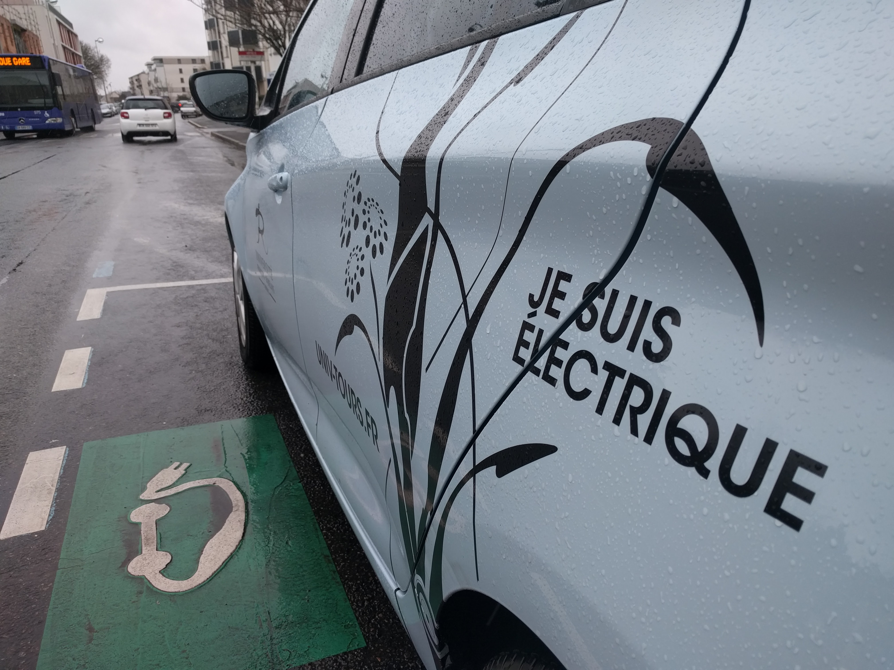

For my PhD, I am investigating dynamic decision making in the routing of electric vehicles. We are specifically interested
in the case where the charging infrastructure is publicly available.

Electric vehicles are increasing in popularity as we try to curb our reliance on fossil fuels. Companies like Tesla are making
EVs an attractive option in the consumer market, but the transition to EVs has been slower for goods distribution.
This is largely a result of EVs' more lengthy and frequent recharging/refueling requirements compared to internal
combustion engine vehicles. Together with my advisors, Jorge Mendoza and
Justin Goodson, I am seeking to mitigate these shortcomings by finding
more efficient routing schemes for EVs.
The EVRP-MRUA
Motivated by environmental concerns and regulations, electric vehicles (EVs) are becoming more popular in supply chain distribution
functions (e.g., La Poste, UPS, Coca Cola). However, EVs pose operational challenges to which their conventional
petroleum-based counterparts are immune. For instance, EVs' driving ranges are often only 25 percent that of conventional
petroleum-based vehicles' (CVs), charging infrastructure is still relatively sparse compared to the network of
refueling stations for CVs, and the time required to charge an EV can range from 30 minutes to 12 hours depending
on charging technology - orders of magnitude longer than the time needed to refuel a CV.
There are two general approaches to overcoming these operational challenges. The first is a simple approach in which routes
are restricted to the vehicle's autonomy. That is, the EV is routed back to the depot when its battery nears depletion
so it may charge overnight in preparation for the subsequent day's deliveries. In the second approach, the EV is
allowed to perform mid-route recharging by taking advantage of charging infrastructure in the field.
Past research has shown that the second approach offers cost savings, because mid-route recharging allows for a decrease in the total
distance traveled and an increase in the capacity of a single EV, thereby reducing the number of vehicles and drivers
needed. However, these studies that have considered mid-route recharging
make the assumption that the charging stations (CSs) are always available to the EV when it arrives to charge.
In reality, this is often not the case. Because charging station infrastructure is limited and EVs require significant
time to charge, charging stations will often be unavailable when an EV arrives, and the EV may be forced to queue.
This discrepancy between modeling assumptions and reality has thus far prohibited logistics companies from implementing
mid-route recharging, despite the suggested cost savings.
Our research reduces this discrepancy by more realistically modeling both the uncertainty in availability and the queuing
process at public charging infrastructure. We model the EV Routing Problem with Mid-route Recharging and Uncertain
Availability (EVRP-MRUA) as a Markov decision process and implement a stochastic dynamic programming solution.
Our work aims to enable logistics companies to take advantage of the increases
in capacity offered by mid-route recharging, thus extending the utility of EVs as delivery vehicles.
Optimization in Natural Resource Management
My masters research focused on the application of optimization methods to improve or better understand natural resource
management practices. My masters thesis specifically emphasized multi-objective optimization. I developed a new method of
quantifying conflict among objective functions. I also developed software to solve our multi-objective models and analyze the results.
Climate Change and the Deschutes National Forest
Image credit: Stephen Fitzgerald
The Deschutes National Forest offers recreation, clean air, carbon storage, wildlife habitat, clean water, and countless
other services. But it is also at risk for high severity wildfire, and climate change is not expected to improve
matters. The US Forest Service wants to curb this risk through fuels removal, but what schedule of treatments is most
effective in consideration of climate uncertainties and with minimal impact to the forest and its provision of
services? How does the answer change if climate change is less intense? More intense?
Forests and climate change
Similar to all other ecosystems, forests are predicted to undergo complex changes as a result of the changing climate.
A few of the changes include new spatial distributions of tree species, increased sediment delivery to streams,
and increasing disturbance regimes such as wildfires, drought, and insect infestation. As this transformation occurs,
forests’ ability to provide ecosystem services will change. For instance, increased frequency of wildfires will
decrease forests’ ability to store carbon and provide habitat for wildlife. Increased sediment runoff to streams
will hinder the ability to provide adequate water supplies to population centers.
To mitigate the undesired changes, our management of forests must evolve alongside climate. What once were optimal
practices may no longer be so. Without proper correction we will be managing forests in a way that restricts their
potential.
To determine new management practices we must first understand how climate change will impact forests’ ability to
provide ecosystem services. How many tons of carbon dioxide will the forest be capable of storing? How many acres
of forest will still qualify as suitable habitat for a particular species? Because forests provide these ecosystem
services in concert with one another, we must also understand how climate impacts the trade-offs that exist among
them. When we look at the simultaneous provision of wildlife habitat, carbon storage, and resistance to wildfire,
how does an increase in any one service alter our ability to acquire an amount of another? And how do these trade-offs
change as a function of climate?
We are working with the Forest Service to answer these questions. Under a few climate change scenarios, we are
determining optimal management strategies for reducing fire hazard in the Deschutes National Forest while maximizing
northern spotted owl habitat and preserving watershed health. We also consider how the conflict among these objectives
changes with climate.
Reducing Human-Bear Conflict in the Chugach National Forest
During my time as a QERM student, I also investigated the reduction of human-bear conflicts in the Chugach National Forest.
Sockeye fishing at the Russian River in the Chugach National Forest. Image credit: https://thekenai.wordpress.com/
Human-bear conflict (HBC) is of primary concern to the US Forest Service (USFS) personnel managing the Russian River watershed
in the Chugach National Forest. The area's fishery draws humans and bears alike, serving as brown bear (Ursus arctos)
core habitat and receiving upwards of 70,000 anglers per summer. HBCs have caused the personal injury of visitors to the
Russian River watershed and have also resulted in the death of bears in the defense of life or property. In 2013, a multiagency
task force in the Chugach National Forest created a five-year action plan specifically targeting the reduction of human-bear conflicts.
In the report a diverse set of management strategies are proposed to mitigate HBC. Among them is the improvement of visibility near
areas of human use, such as fishing spots, hiking trails, campgrounds, and roads. According to the report, improved sighting distance
will reduce the likelihood that people and bears will encounter each other in close proximity and lower the potential for human-bear
conflict. To achieve the increased sighting distance, the multiagency task force suggests vegetation clearing. So as to be sensitive
to cultural resource values associated with the Sqilantnu Archaeological District and so as not to jeopardize riparian restoration work,
the proposed vegetation treatments are what may be best described as "weedwacking" the bordering vegetation near human use areas.
The extent to which this vegetation treatment may be performed across the watershed depends on the allocation of budget to the task.
For a given budget, our research aims to find the optimal spatial and temporal distribution of these vegetation treatments so that
throughout the watershed, sighting distance is maximized and, hopefully, HBC is minimized.
Solving multi-objective models with the Alpha-Delta algorithm
The alpha-delta algorithm is in the family of methods used to find Pareto efficient solutions to multi-objective
optimization models. (Others in this family include the epsilon-constraint method and weighted sums.) The algorithm
finds optimal solutions by iteratively slicing the solution space with a tilted hyperplane.
Early in my QERM career, I wrote an implementation of the alpha-delta algorithm using the Concert Technology Java
API for IBM's CPLEX optimization engine. Given a model file and a couple of parameters, it finds the model's Pareto
frontier.
A few researchers beyond our lab have put it to use. Below are short descriptions of two of the projects whose
models have been solved with the program.
The San Juan River
Water allocation in the San Juan River Will Chen
Fellow QERMie Will Chen is studying how water management at the
dam on the San Juan River impacts fish populations in the river and water supplies for downstream communities.
His model minimizes water shortage and nonnative fish populations while maximizing native fish populations.
Ecological restoration in Chile Trevor Walter
UW SEFS alumni Trevor Walter is working with the Nature Conservancy to determine the best means of ecological restoration
in a Chilean reserve that is marbled with nonnative eucalyptus plantations.
Trevor is seeking a means to restore the plantations to native forest cover while maximizing revenue and promoting
community engagement via employment in the restoration activities.
VRP-REP Mapper
The Vehicle Routing Problem REPository (VRP-REP) is a place where researchers in vehicle
routing can share datasets and solutions using a common format. Using a common format better allows researchers
in the field to share, review, and collaborate with others.
I built a simple mapping utility for VRP datasets and solutions that are formatted according the VRP-REP specification.